Palestra: guida per l'utente
Come preparare Palestra, allenarti con lei ogni settimana e farla lavorare insieme a Everyday.
Stai leggendo la guida per il computer. Le immagini mostrano l'app su uno schermo largo. Dove la guida dice tocca, sul computer è un clic. Nel menu in cima, Mostra la guida per → 📱 Telefono passa a quella per il telefono (la scelta resta). Clicca un'immagine per ingrandirla.
Questa è la guida per il telefono. Nel menu in cima, Mostra la guida per → 💻 Computer passa a quella per il computer.
Cos'è Palestra
Palestra ti dice cosa fare in palestra, esercizio per esercizio, e si ricorda cosa hai fatto. Prepari una volta le tue schede (Petto e bicipiti, Gambe…), le metti in un workout, cioè la tua settimana, e in palestra segui lo schermo: serie, peso, recupero, dove andare dopo.
I tuoi dati stanno in un tuo spazio privato su GitHub, che leggi solo tu (ed Everyday, se lo colleghi). L'app funziona anche senza rete: si sincronizza quando la ritrova.
Palestra non è un programma di allenamento scritto da un coach e non conta le calorie. Decide cosa fai: nome, durata ed esercizi. Quando lo fai lo decide Everyday.
Un allenamento è una scheda fatta davvero: lo trovi nello Storico.
Prima configurazione
Una volta sola, circa venti minuti. Ti serve un account GitHub e la tua palestra in mente: le zone e le macchine che usi.
1. Installare l'app
Apri l'indirizzo di Palestra in Chrome. Sul telefono scegli Installa app (o Aggiungi a schermata Home); sul computer, Installa nella barra dell'indirizzo. Da lì aprila dall'icona: si apre a schermo intero e funziona offline.
2. Collegare il tuo spazio su GitHub
Su GitHub crea un repository privato e vuoto chiamato palestra-data. Poi crea un token per questo dispositivo: Settings → Developer settings → Fine-grained tokens, accesso solo a palestra-data, permesso Contents: Read and write. Chiamalo come il dispositivo, per esempio «Telefono di Tommaso».
In Palestra tocca l'ingranaggio, poi Collegamento GitHub. Scrivi il tuo utente, il repository e il token, poi Salva e sincronizza.


3. Disegnare la tua palestra
In Palestra aggiungi le zone in cui ti sposti (Ingresso e cardio, Sala macchine, Pesi liberi…) e tocca Riordina per metterle nell'ordine in cui le attraversi. Le schede useranno questo percorso per farti camminare meno.


In ogni zona tocca + per aggiungere una macchina, con il numero che ha sopra (M14, C3) e le tue regolazioni (sedile, schienale). Più macchine uguali possono essere una sola voce, come i tapis roulant C1–6.


4. Aggiungere gli esercizi
In Esercizi tocca +. Scegli il tipo (Pesi, Corpo libero o Cardio), la macchina e il recupero di solito. Le note sono facoltative: come eseguirlo, cosa ricordare. Le rivedi durante l'allenamento.


5. Creare le schede
In Schede tocca Nuova scheda, dai un nome (per esempio «Petto e bicipiti») e aggiungi gli esercizi con Aggiungi esercizio. Tocca un esercizio per scegliere serie, ripetizioni, peso e recupero. Dentro una scheda trovi tutto il resto.


6. Facoltativo: importare un workout già scritto
Se Marco, il tuo istruttore, ti ha scritto la settimana su un foglio o in un messaggio, non devi ricopiarla a mano. Tocca Importa accanto a Nuovo workout e incolla il testo: un esercizio per riga, come lo scriveresti tu. Importare da testo spiega come si scrive.


Tocca Leggi il testo. Prima di salvare vedi un'anteprima: già tuo riusa un tuo esercizio con la sua macchina, nuovo lo crea, da controllare segna un pezzo che l'app non ha capito.


7. Rendere attivo un workout
Un workout raccoglie le schede della settimana, ognuna nel suo giorno. In Workout aprine uno e tocca Rendi attivo: da quel momento lo vedi in Oggi ed Everyday lo pianifica. Se cambi a metà settimana, scegli se partire da lunedì o da oggi.


Le quattro sezioni
| Sezione | A cosa serve |
|---|---|
| Oggi | La scheda di oggi, la settimana, l'ultimo allenamento e il mese |
| Allenamento | Tre linguette: Workout (le tue settimane: quali schede, in che giorni e a che ora), Schede (da cercare, aprire, modificare e iniziare) ed Esercizi |
| Palestra | Le tue palestre: zone, macchine e attrezzatura |
| Storico | I tuoi progressi, le pause e ogni allenamento fatto |
In Allenamento passi da una linguetta all'altra toccandola o scorrendo a destra e a sinistra sull'elenco. Riapre l'ultima che hai guardato. Da una scheda, un workout o un esercizio, in alto ‹ Allenamento › Schede ti riporta alla linguetta giusta.
In cima a ogni pagina ci sono le sue azioni, come Nuova scheda e Importa. L'ingranaggio in alto a destra apre le Impostazioni: un elenco in tre gruppi (Collegamenti, Allenamento, App). Ogni riga dice com'è impostata ora e apre una pagina sola su quella cosa; ← Impostazioni in alto torna all'elenco.
In Impostazioni → Lingua e aspetto, Aspetto sceglie i colori dell'app: Automatico segue il telefono o il computer (scuro la sera, se il telefono lo è), Chiaro o Scuro restano sempre così. La scelta resta su questo dispositivo, e la guida la segue. Durante l'allenamento lo schermo è comunque scuro.


Cercare, filtrare e raggruppare
Esercizi, Schede e Workout hanno in alto gli stessi strumenti:
- Cerca e Filtri. Filtri apre un pannello sotto la ricerca, solo quando lo tocchi, con tutto: le etichette dei gruppi, Raggruppa per, Ordina per, i filtri (ognuno con quanti ne trova), Colori e Righe (compatte, o con dettagli e note). Fine lo chiude. Sul pulsante c'è quanti filtri sono accesi; a pannello chiuso restano sotto la ricerca come etichette con la ✕ per toglierli.
- I gruppi, nel pannello, come etichette colorate con il numero: toccane una per vedere solo quel gruppo (anche più d'una). Tieni premuto e trascina un'etichetta per riordinarle: l'elenco segue lo stesso ordine.
- Ogni gruppo si chiude toccandone il titolo; Chiudi tutti li chiude insieme. Il quadratino colorato accanto al titolo cambia il colore del gruppo, che ritorna come barra a sinistra di ogni riga.
Ogni workout ha il suo colore, lo stesso in Schede e in Workout. In Workout, gli altri workout sono righe con ⋯: Rendi attivo, Apri, Duplica, Esporta come testo, Elimina. Gruppi chiusi, ordine, filtri e colori restano come li lasci, su questo dispositivo.
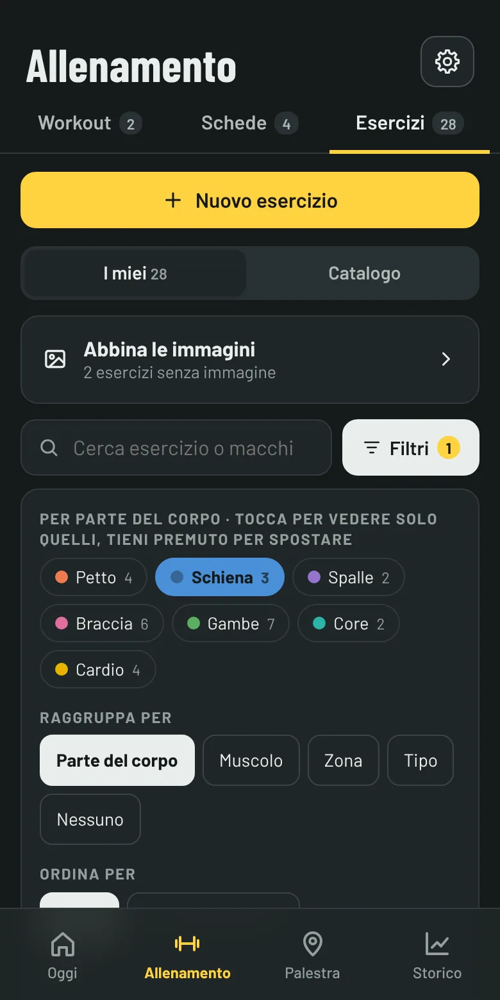
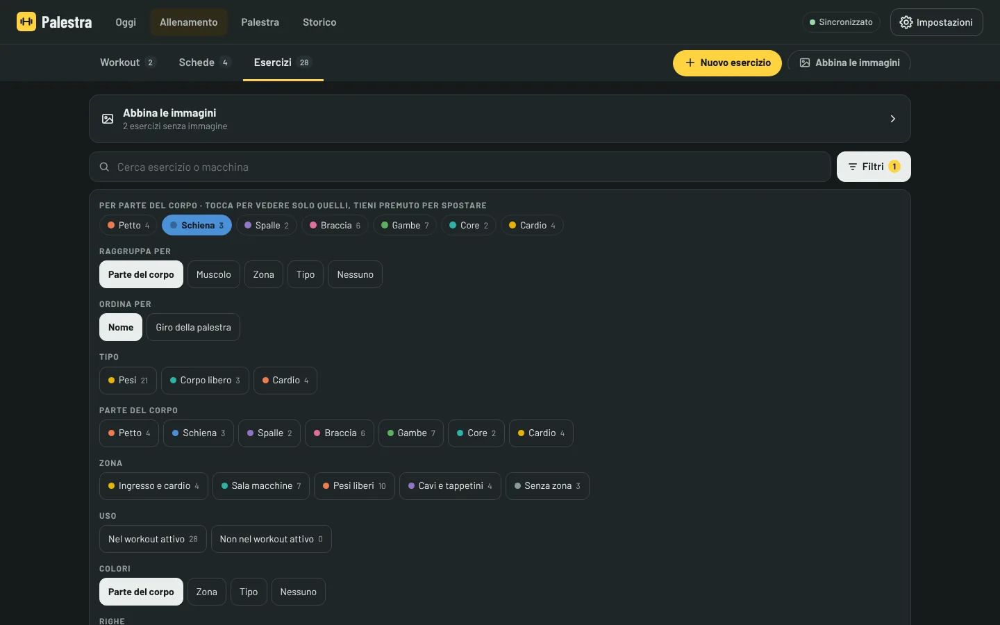
Oggi
La prima pagina ti dice cosa ti tocca oggi. In alto c'è la scheda del giorno, con l'ora se l'hai data, e Inizia. Se Everyday l'ha già messa in agenda, accanto c'è scritto in Everyday.


Iniziare la scheda di oggi
Tocca Inizia. Prima dell'allenamento vero c'è Pronto?: quanto dura, quante serie, quante zone, il primo esercizio in grande con la sua immagine, e tutta la scheda in ordine con i cambi di zona. L'orologio parte solo quando tocchi Inizia. Poi l'allenamento si apre a schermo intero: Durante l'allenamento spiega cosa vedi.
Preferisci che parta da solo? In Impostazioni → Allenamento → Prima di iniziare scegli Conto alla rovescia: 15 secondi (o quanti vuoi) per arrivare alla prima macchina, con +15 s e Inizia ora.
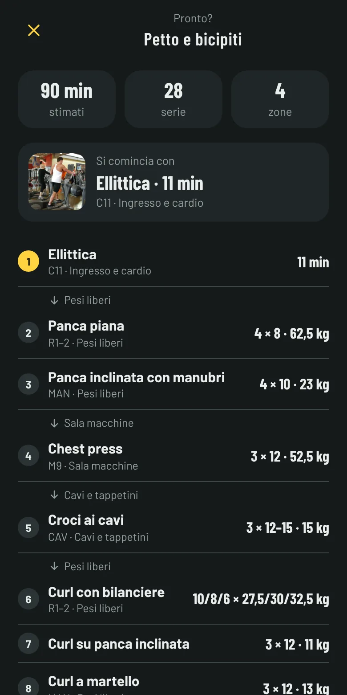
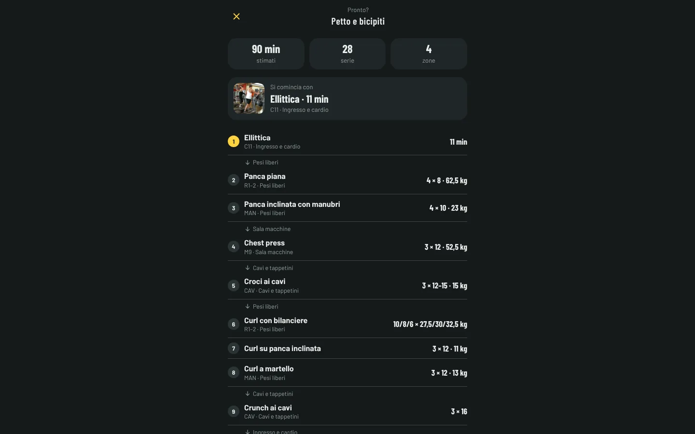
Sposta a domani
Oggi non ce la fai? Tocca Sposta a domani. La scheda passa a domani solo per questa settimana, e lo vedi nella lista dei giorni. Rimetti oggi annulla. Se usi Everyday, alla prossima sincronizzazione sposta anche il blocco: alla stessa ora se è libera, altrimenti nel primo spazio libero di domani.
Con un workout a rotazione non ci sono giorni: Oggi mostra La prossima, e se non è passato il riposo che hai messo dopo l'ultima scheda lo dice (riposo consigliato ancora). Con le settimane alterne Questa settimana dice se è la A o la B.


La settimana e il mese
Sotto vedi le schede della settimana: quelle fatte, la prossima e quelle che restano. Poi il workout attivo con Cambia, l'ultimo allenamento e un quadretto per ogni giorno del mese, giallo quando ti sei allenato.
Workout
Un workout è la tua settimana: le schede che fai, ognuna nel suo giorno. Quello attivo è in giallo in cima; gli altri restano salvati con il loro storico, per quando ti servono (per esempio una settimana di scarico).


Creare un workout
Tocca Nuovo workout. In alto ci sono le tue schede come tessere colorate: trascinane una sul giorno, oppure toccala e poi tocca il giorno. In un giorno ne stanno più di una (mattina e sera). Per spostarne una trascinala su un altro giorno; per toglierla tocca ✕ o trascinala sul cestino che compare in fondo. Nuova scheda ne crea una (o la importa da testo).


Giorni e ore
Sulla tessera c'è l'ora (o orario?): toccala per sceglierla, o Senza orario. Con l'ora Everyday la mette in agenda da solo; senza, la scegli tu ogni settimana in Everyday. Su un computer la settimana è una griglia di sette colonne.
Settimane alterne e rotazione
Sopra le tessere scegli la forma del workout:
| Forma | Come funziona |
|---|---|
| Settimanale | Ogni settimana uguale |
| Alterne A · B | Due settimane che si danno il cambio: sul telefono scegli Settimana A o B e riempila; quella in corso è segnata (questa). Si conta da quando il workout è attivo |
| Rotazione | Nessun giorno fisso: ogni volta che vai fai la prossima, dopo l'ultima si ricomincia. Trascina le schede nel giro per l'ordine; Giorno di riposo aggiunge un cerchio dopo una scheda (toccalo: 1, 2, 3 giorni o via). Se vai prima, Oggi te lo dice |
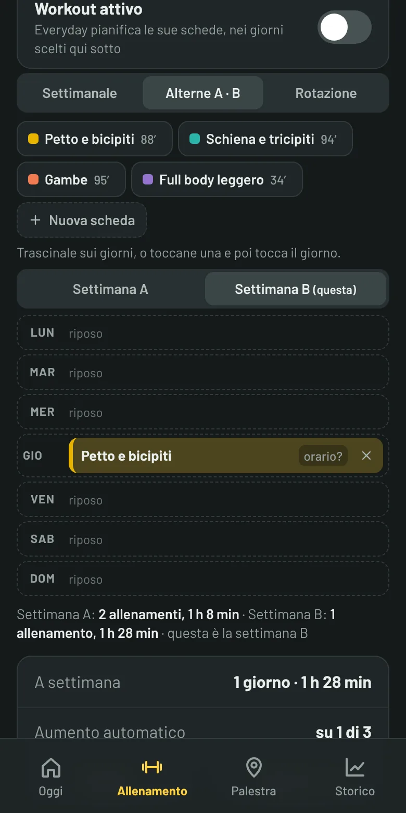
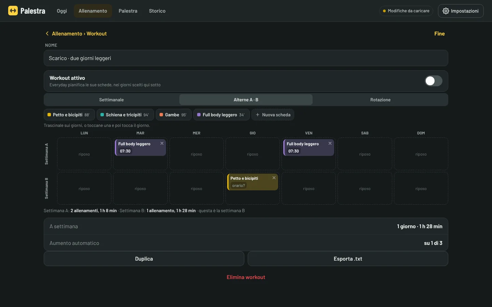
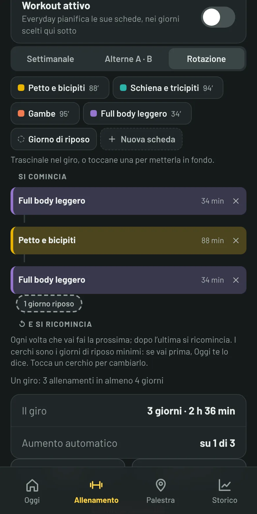
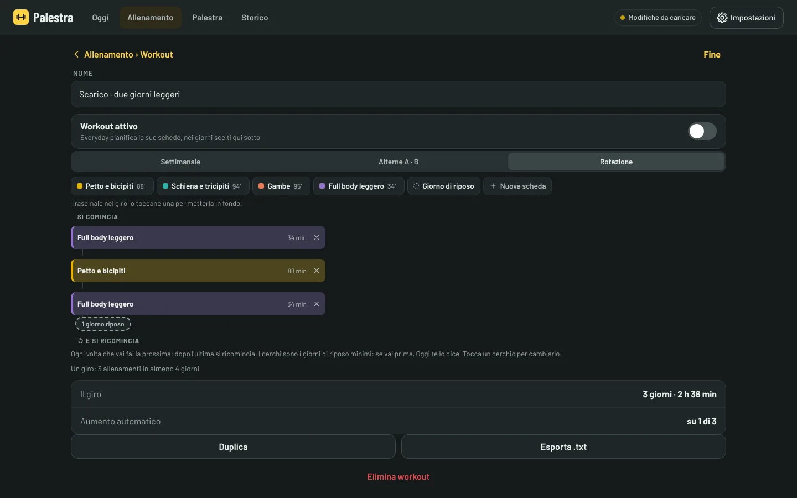
Everyday riceve ogni settimana i giorni di quella settimana (A o B); con la rotazione riceve le schede senza un giorno, e le metti tu in agenda. Esporta .txt tiene la forma, e l'import la ritrova.
Cambiare il workout attivo
In Workout tocca ⋯ su un altro workout, poi Rendi attivo. Se è metà settimana, scegli Da lunedì per finire la settimana con quello di prima, o Da oggi. Il workout di prima resta salvato.
Esportare e duplicare
Esporta .txt salva il workout come testo, da mandare a qualcuno o da reimportare. Duplica ne fa una copia da cambiare senza toccare l'originale.
Schede
Una scheda è una sequenza di esercizi che ripeti, come «Gambe». Palestra calcola la durata stimata dalle serie e dai recuperi, e la corregge con quanto ci hai messo davvero: le ultime sei volte, le più recenti contano di più. Tocca i minuti in alto nella scheda per vedere il conto, volta per volta.


Trovare una scheda
Sono raggruppate per workout, ognuno con il suo colore. Scrivi nella ricerca, tocca l'etichetta di un workout, o apri Filtri (workout, stato, durata). Con Righe → Con dettagli e note sotto ogni scheda vedi in quali workout è.
Dentro una scheda
In alto la durata stimata, le serie e le zone. Poi gli esercizi nell'ordine in cui li fai, con le frecce quando cambi zona. A destra di ogni esercizio c'è l'ultima volta: il peso, i minuti o le ripetizioni del tuo ultimo allenamento.


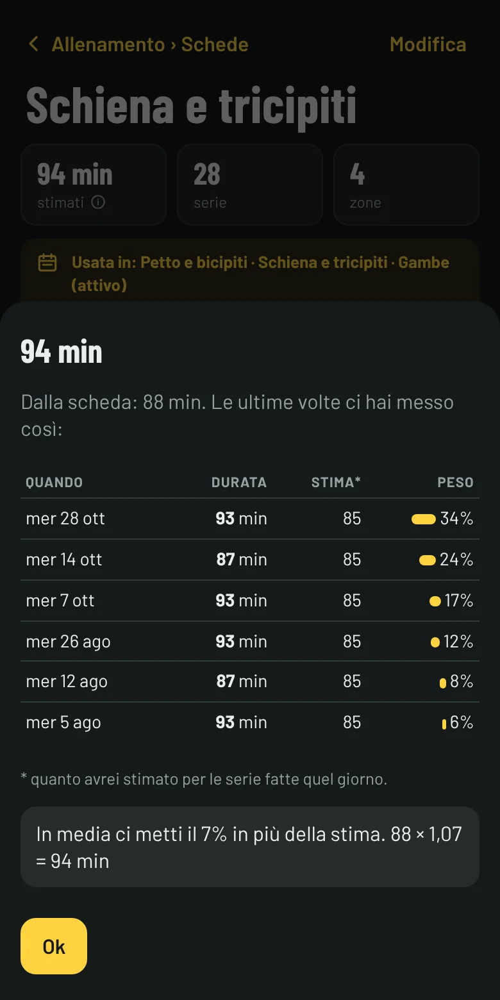
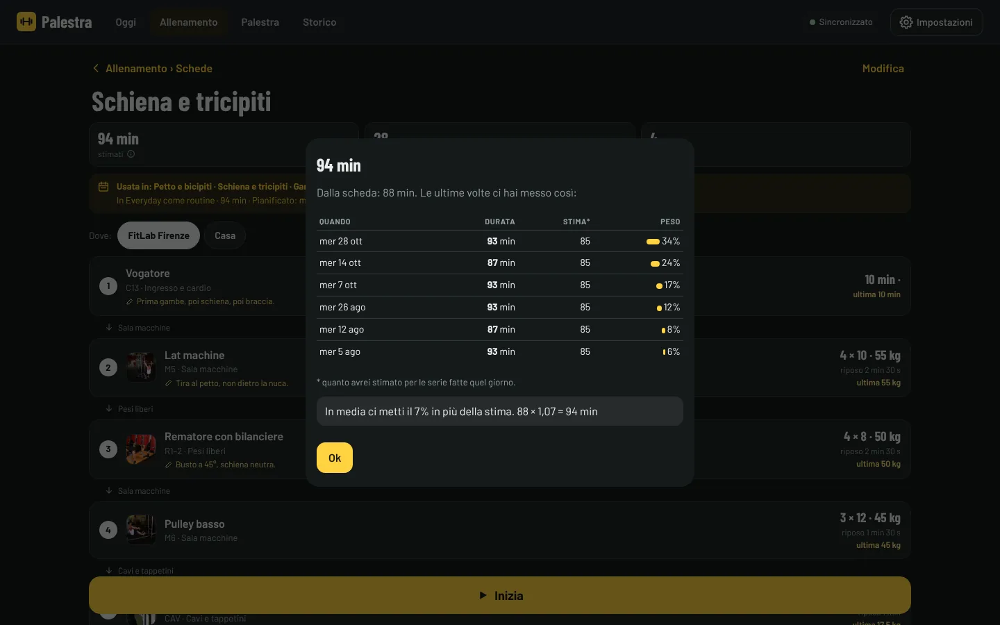
Modificare una scheda
Tocca Modifica. Gli esercizi sono blocchi uno sotto l'altro, uniti da cerchi: ogni cerchio è il recupero prima del prossimo.
- Trascina un blocco dalla maniglia (⋮⋮) per cambiare l'ordine; su un computer lo trascini da dove vuoi, e trascini anche dall'elenco a destra.
- Tocca il cerchio per cambiare il recupero (30 s, 45 s, 1, 1:30, 2, 2:30, 3 min). Dopo 3 min viene ⚡ superserie: i due esercizi si fanno di seguito, senza recupero in mezzo, giro dopo giro.
- + oppure, accanto a un blocco: l'alternativa, da fare se la macchina è occupata o manca. Puoi anche trascinarci sopra un altro blocco. Durante l'allenamento è la prima proposta di Ho fatto un altro esercizio.
| Parte | Cosa imposti |
|---|---|
| Nome | Come la vedi qui e in Everyday |
| Aumento automatico | Se Palestra ti propone di salire di peso ogni settimana |
| Ordine | Trascina dalla maniglia (o le frecce ↑ ↓ sulla maniglia, da tastiera) |
| Un esercizio | Toccalo: serie, ripetizioni o secondi, peso, recupero, oppure Togli dalla scheda |
| Serie uguali / Serie diverse | Con diverse ogni serie ha le sue ripetizioni e il suo peso (piramidi, serie a scendere, un riscaldamento); Un'altra serie ne aggiunge una |
| Fascia di ripetizioni | Es. 8–12 invece di un numero fisso: il peso sale quando arrivi a 12 in tutte le serie |
| A cedimento | Tutte le serie o solo l'ultima, fino a quando non ne esce un'altra pulita |
| Aggiungi esercizio | Sceglilo dall'elenco, o creane uno nuovo |
| Importa | Aggiunge esercizi scritti come testo |


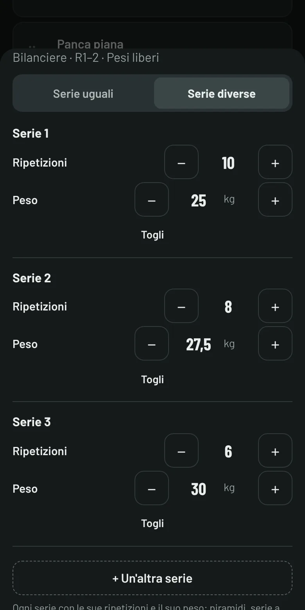
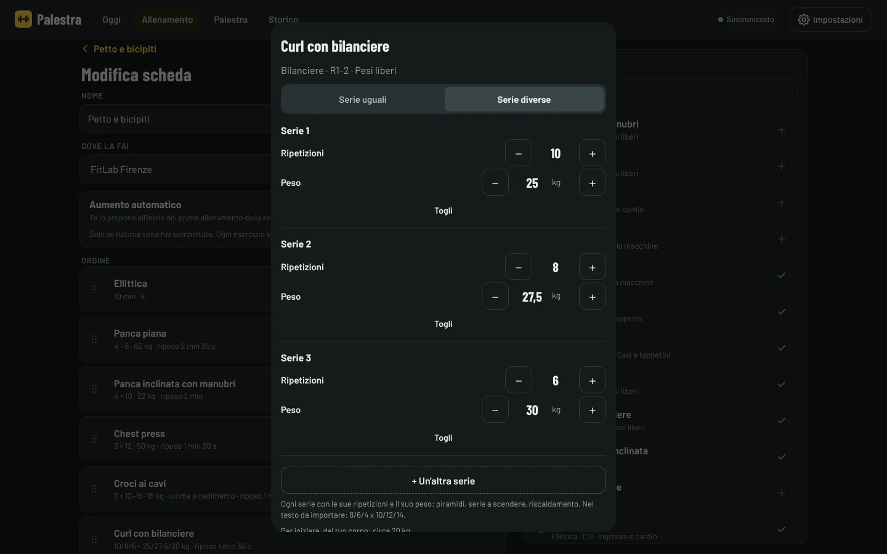
Prova com'è
Nella pagina di una scheda, Prova com'è apre le stesse schermate dell'allenamento vero, ferme: una striscia gialla dice Prova · non si salva niente, l'orologio mostra «—:—», il recupero non scorre (Avanti per andare oltre). Fatto passa alla serie dopo, i bordi saltano da un esercizio all'altro. Niente sessione, niente aumenti, niente avviso a Everyday. Esci ti riporta alla scheda.
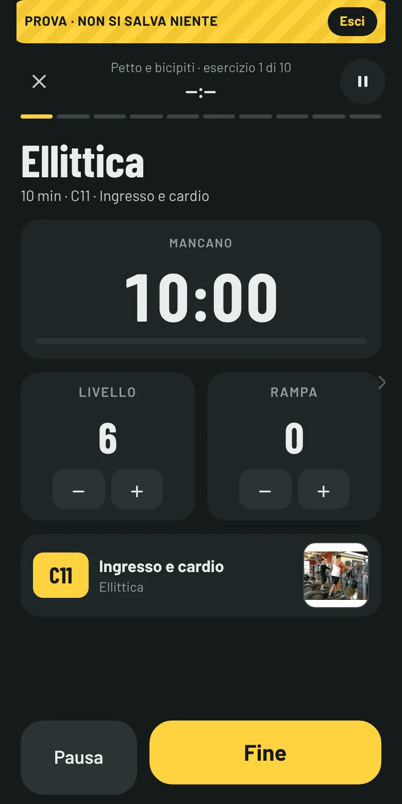
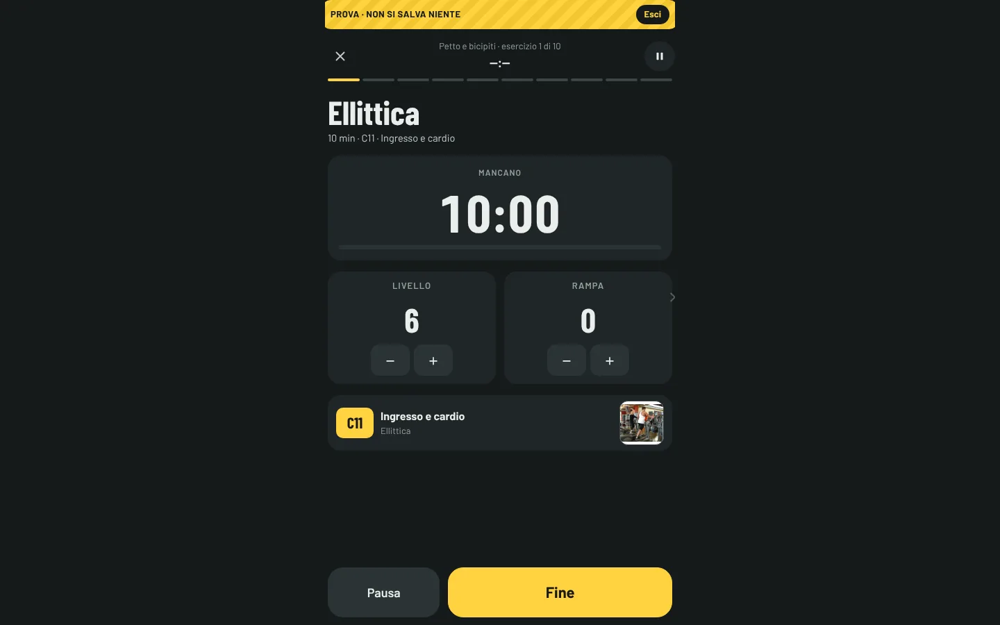
Duplicare in un altro workout
In una scheda tocca Duplica in un altro workout e scegli dove. La copia è tua da cambiare: l'originale resta com'era.
Esercizi
In Allenamento → Esercizi trovi tutti i tuoi esercizi, raggruppati per parte del corpo: Petto, Schiena, Spalle, Braccia, Gambe, Core e Cardio. Dentro ogni parte ci sono i muscoli (in Gambe: Quadricipiti, Femorali, Glutei, Polpacci, Adduttori). Filtri → Raggruppa per li mette anche per muscolo, zona o tipo; in Filtri scegli tipo, parte del corpo, zona, se sono nel workout attivo, e righe compatte o con le note.


Il catalogo
In alto, I miei · Catalogo. Il catalogo ha circa 750 esercizi comuni, con il disegno e i muscoli, i più usati con il nome in italiano. Cerca, filtra per parte del corpo o attrezzo, e tocca + Aggiungi: diventa tuo, con muscoli, attrezzo e disegno già messi. Quelli che hai già dicono ✓ tuo. Non c'è? Crea «…» in fondo ne fa uno nuovo con quel nome.
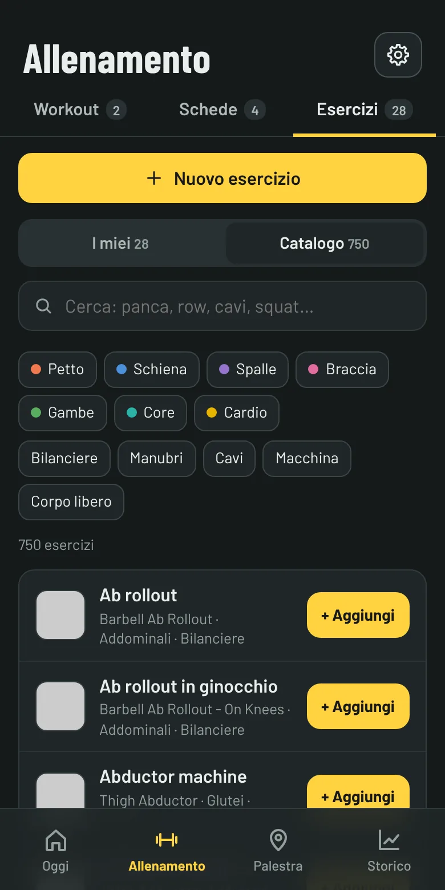
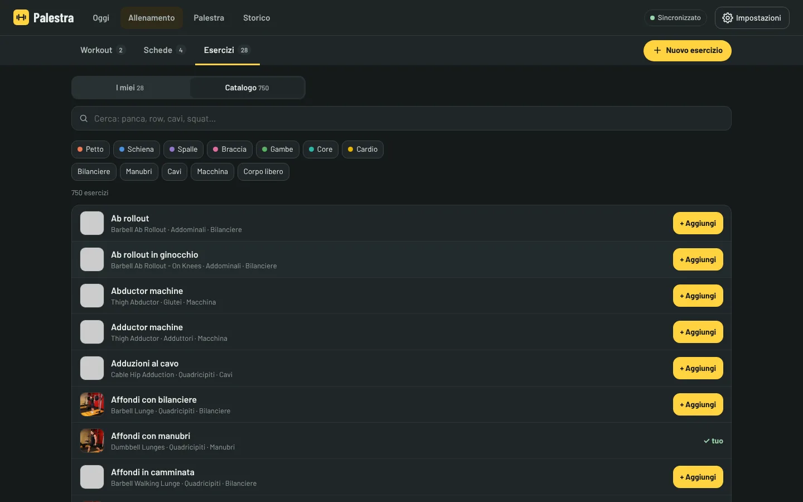
I muscoli
Palestra li riconosce dal nome, in italiano, inglese o tedesco: Chest press va in Petto, Lat machine in Schiena › Dorsali, Push down ai cavi in Braccia › Tricipiti, Beinpresse in Gambe. Nella pagina dell'esercizio, sotto Muscoli, quelli riconosciuti hanno il bordo tratteggiato; tocca i muscoli per sceglierli tu. Il primo che scegli è il principale (★): decide il gruppo; gli altri contano a metà nello Storico. Un esercizio che Palestra non capisce e senza muscoli scelti finisce in Da sistemare, in fondo, così lo vedi.
I tre tipi
| Tipo | Cosa imposti |
|---|---|
| Pesi | Serie, ripetizioni, kg e recupero; l'etichetta scura porta il numero della macchina |
| Corpo libero | Serie, ripetizioni o secondi, recupero; l'etichetta ha il bordo tratteggiato |
| Cardio | La macchina (tapis roulant, ellittica, bike, vogatore…) e gli obiettivi: durata, velocità, pendenza, livello |


Le immagini
Ogni esercizio può avere un disegno che mostra il movimento, in due posizioni (Inizio e Fine), e ogni macchina una tua foto.
- Il disegno. Nella pagina dell'esercizio tocca Scegli un'immagine: Palestra propone i disegni più simili al nome. Se nessuno va bene, cerca con altre parole, in italiano o in inglese. Nessuna lascia l'esercizio senza.
- Tutti insieme. In Esercizi, la scheda Abbina le immagini ti passa gli esercizi senza immagine uno dopo l'altro: tocca il disegno giusto e Usa questa, o Nessuna.
- La tua foto della macchina. Tocca Fotografa la macchina: sul telefono si apre la fotocamera. La foto viene rimpicciolita e salvata sul telefono e, se GitHub è collegato, in palestra-data nella cartella photos, così la vedi anche sugli altri dispositivi. Rifai e Togli la cambiano.
Non ti servono? In Impostazioni → Lingua e aspetto → Immagini le spegni tutte: restano salvate, ma non si vedono più finché non le riaccendi.
I disegni vengono da free-exercise-db, di pubblico dominio; si scaricano la prima volta che li vedi e poi restano anche senza rete.


Palestra
Una o più palestre: quella di sempre, Casa, quella dell'albergo. Le vedi come linguette in alto; + Un'altra ne aggiunge una, la matita ne cambia il nome (o la elimina: zone e macchine passano alla prima).
Zone e macchine
Le zone sono nell'ordine in cui le attraversi: Riordina le sposta, e le schede seguono questo giro. In ogni zona tocca + per una macchina: numero, nome, regolazioni. Tocca una macchina per cambiarla. Dalla pagina di un esercizio puoi aggiungerne una che non c'è (Nuova macchina, o Altra macchina per il cardio, dove scegli cosa misura oltre al tempo).
L'attrezzatura
Attrezzatura (a destra su un computer) è cosa c'è in quella palestra, a spunta: bilanciere, rack, panche, manubri, cavi, leg press, macchine, parallele e sbarra, cardio, tappetini. La prima palestra ha tutto finché non togli qualcosa; una nuova parte vuota, e le macchine che aggiungi spuntano da sole quello che serve.
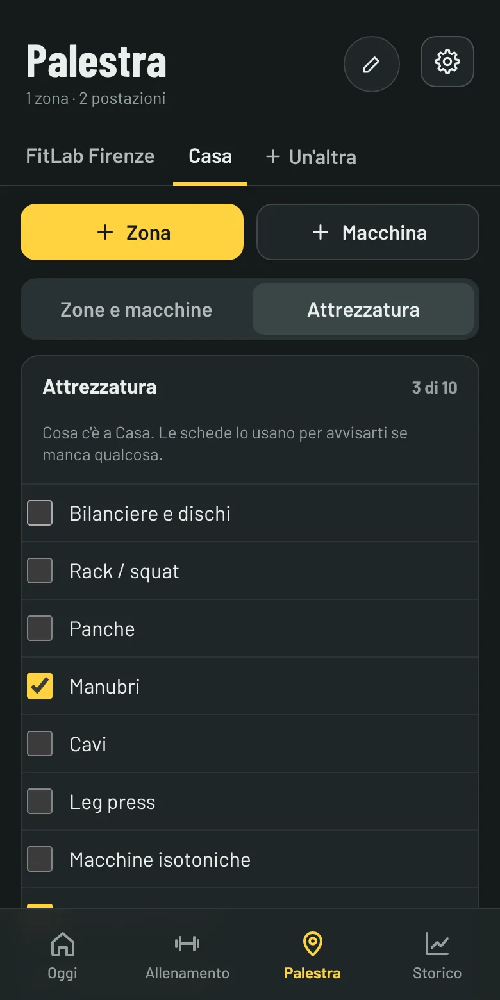
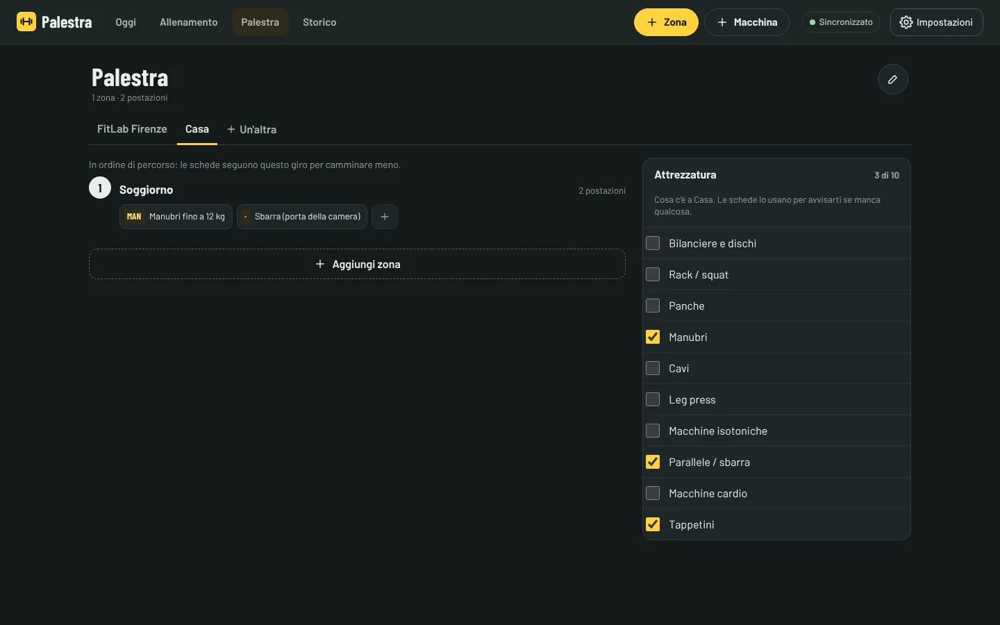
Quando manca qualcosa
Ogni esercizio sa cosa gli serve (dal tipo, dall'attrezzo e dal nome). Ogni scheda si fa in una palestra: la prima, o quella scelta in Modifica → Dove la fai. Con più palestre, nella scheda c'è Dove: per vedere com'è altrove.
Se lì manca qualcosa, un avviso in cima dice quanti esercizi, e ognuno ha una riga arancione (Serve: Leg press) con due alternative per gli stessi muscoli, prima tra i tuoi esercizi e poi tra quelli semplici (corpo libero, manubri). Usa chiede:
- Solo quando sei a Casa: la scheda resta com'è; lì, al suo posto, fai l'alternativa (con al posto di … accanto, e Torna a … per toglierla). Serie e ripetizioni restano; i minuti di cardio diventano una serie a tempo.
- Sostituisci nella scheda: da ora in poi, ovunque.
Inizia e Prova com'è partono nella palestra che stai guardando. Lo stesso avviso c'è in Oggi, sulla scheda di oggi, e sulla settimana del workout su un computer.
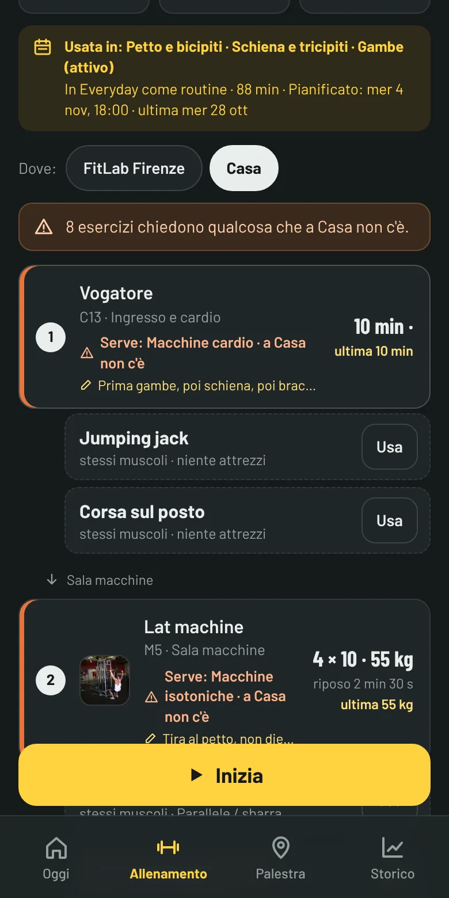
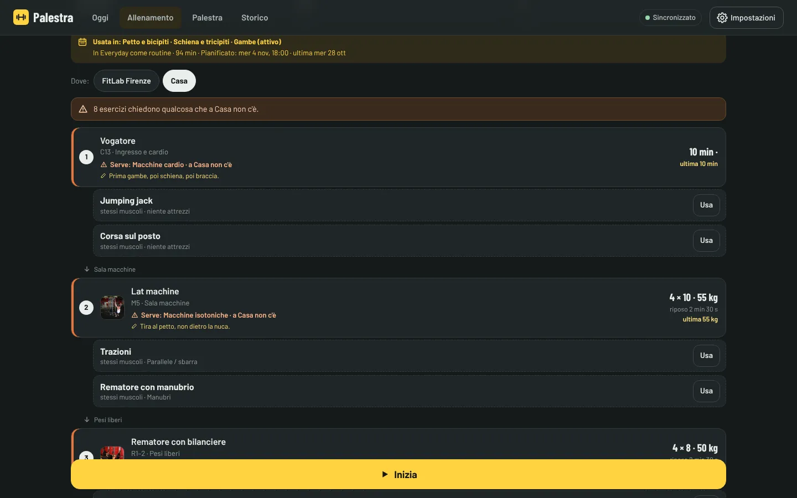
Durante l'allenamento
Lo schermo diventa scuro e grande, resta acceso e funziona senza rete. Se il telefono si blocca o l'app si ricarica, riaprila: riprende da dove eri.
Gli aumenti della settimana
Al primo allenamento della settimana, se l'aumento automatico è acceso, Palestra ti propone i nuovi obiettivi: un esercizio per riga, prima e dopo. Togli la spunta a quelli che non vuoi, poi tocca Conferma … e inizia, oppure Inizia con i pesi di prima.


Una serie
Vedi l'esercizio, la serie (2 di 4), ripetizioni e kg, la macchina con la zona e la tua nota. Se hai fatto diverso, correggi con − e +. Poi tocca Fatto. Indietro torna al passo prima (la serie precedente o il cardio): quello che avevi segnato si toglie e lo rifai.


Cosa vuol dire il peso. Con i manubri il numero è per manubrio (lo leggi sul manubrio) e sotto c'è il conto: «Prendi 2 manubri da 15 kg · 30 kg in tutto». Con il bilanciere è il totale con la sbarra da 20 kg, e sotto i dischi per lato. Per un esercizio diverso (un manubrio solo, o il bilanciere contato per lato) cambialo nella pagina dell'esercizio, sotto Attrezzo: Il peso è e Manubri.
Le serie diverse. Se la scheda ha serie diverse (es. 8 × 10, 6 × 12, 4 × 14 kg), sotto il titolo c'è una riga con tutte: quelle fatte, quella di adesso e quelle dopo. Ogni serie parte dai suoi numeri.
A cedimento. Un'etichetta gialla Fino a cedimento sopra le ripetizioni, e sotto l'obiettivo (es. Obiettivo 8–12) con le ripetizioni della volta scorsa. Le ripetizioni partono da quante ne hai fatte la volta scorsa in quella serie: a fine serie le aggiusti con − e +.
Il peso per iniziare. Se un esercizio non ha ancora un peso e hai compilato Impostazioni → Il tuo corpo, la serie propone Per iniziare: … kg con Usa. È solo un'indicazione, prudente: se le ripetizioni escono facili, alza.
Una ripetizione in più. Premi + oltre la scheda: accanto al numero compare «una in più della scheda». Si salva quello che hai fatto; alla fine decidi se tenerlo nella scheda.
Una serie o un esercizio in più
Nel recupero dopo l'ultima serie di un esercizio, Palestra chiede: Finite le serie di … Ne fai un'altra?
- + Un'altra serie: arriva subito, segnata in più, con i numeri della serie appena fatta. Togli se ci ripensi.
- + Un esercizio: scegli tra i tuoi esercizi; arriva subito, segnato aggiunto, con una serie dai numeri della volta scorsa. Finita quella, la stessa domanda.
Dopo l'ultima serie dell'allenamento la domanda resta, con Termina l'allenamento sotto.
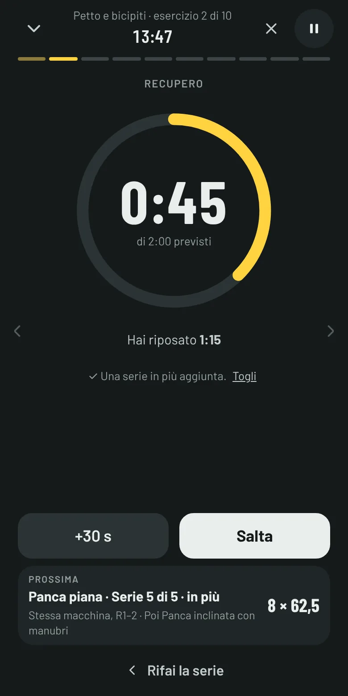
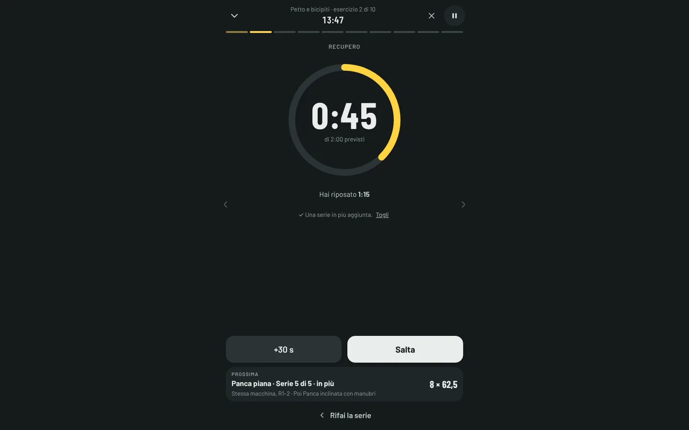
Guardare gli esercizi prima e dopo
Tocca il bordo sinistro o destro dello schermo (o scorri col dito) per vedere l'esercizio prima o dopo. Si capisce che stai solo guardando: in alto c'è Anteprima, il riquadro tratteggiato dice dove sei davvero, il resto è in grigio e al posto di Fatto c'è Torna all'esercizio …. Nella barra in alto, il segmento che guardi ha un contorno; quello giallo resta dove sei.
- Fallo adesso, su un esercizio dopo (o saltato): diventa il prossimo, per esempio se la sua macchina è libera e quella che tocca no.
- Correggi i numeri, su uno già fatto: cambi ripetizioni e kg di ogni serie.


Accanto alla macchina c'è una piccola immagine: la tua foto, o il disegno dell'esercizio. Toccala per vederla a tutto schermo; Macchina ed Esercizio passano dall'una all'altro, e toccando il disegno vedi l'altra posizione.


Il recupero
Parte il conto alla rovescia, e vedi quanto hai riposato davvero. +30 s allunga (a tempo scaduto conta 30 secondi da adesso), Salta riparte subito. A zero suona, il telefono vibra e Salta diventa Fine, in giallo. Hai toccato Fatto troppo presto o sbagliato un numero? Rifai la serie la riapre con i valori che avevi messo. Sotto c'è cosa viene dopo e dove andare.


Il suono a fine recupero
In Impostazioni → Allenamento, Suono a fine recupero: Campanella, Tre bip, Gong o Nessuno, il volume e Prova. Puoi avere un tic negli ultimi 3 secondi, e un secondo suono dopo 30 secondi se non tocchi niente. Il suono parte dopo il primo tocco nell'allenamento (i browser lo vogliono così).
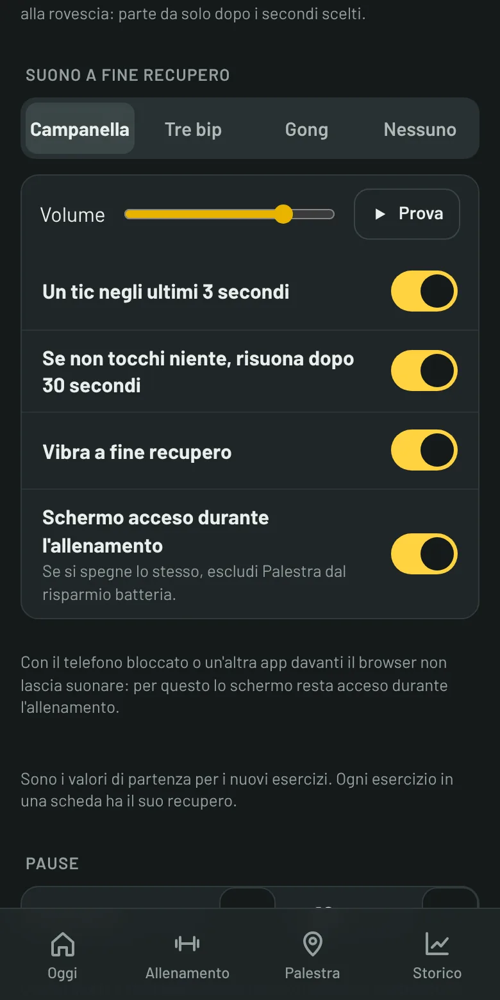
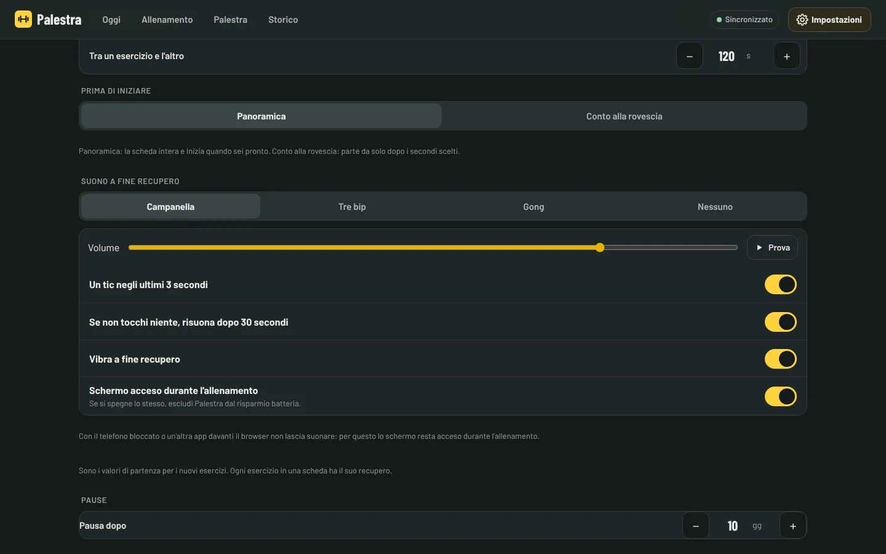
Uscire senza finire
La freccia ⌄ in alto a sinistra riduce l'allenamento: torni dov'eri nell'app e l'allenamento continua. In basso resta una barra con la scheda e il recupero che scorre; a fine recupero diventa gialla e suona. Tocca Torna per rientrare. Per finire davvero c'è × in alto a destra.
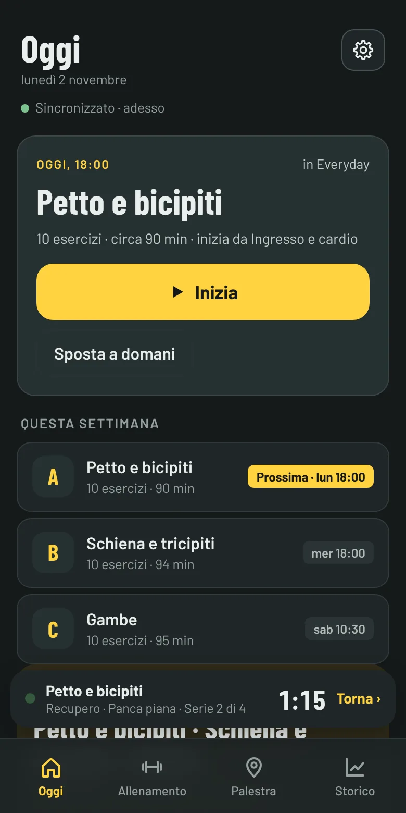
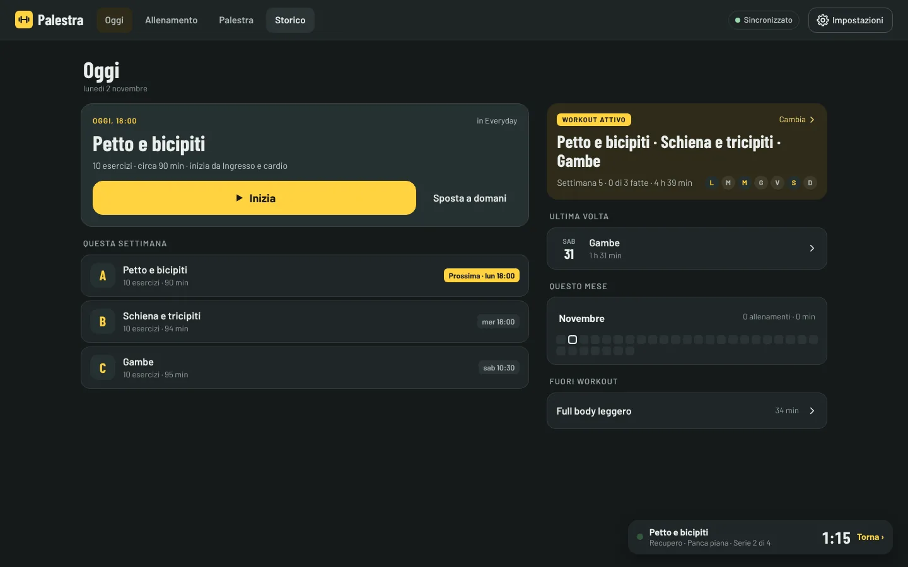
Ho fatto un altro esercizio
La macchina è occupata e hai fatto altro? Sotto il nome tocca Ho fatto un altro esercizio. In cima c'è l'alternativa della scheda (se c'è), poi esercizi simili per gli stessi muscoli, con i numeri dell'ultima volta; sotto puoi cercare tra tutti i tuoi. Le serie che restano diventano di quello, segnato invece di …. Alla fine scegli: solo per oggi, a questa palestra (se ne hai più di una), o da ora nella scheda.
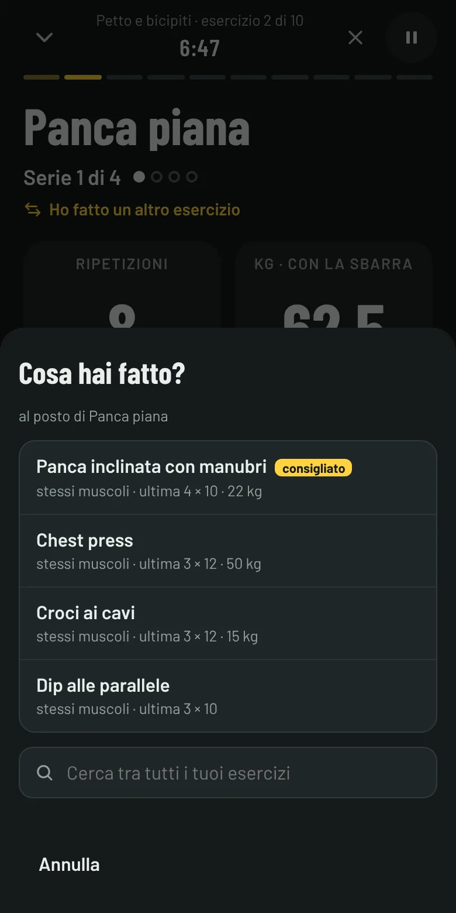
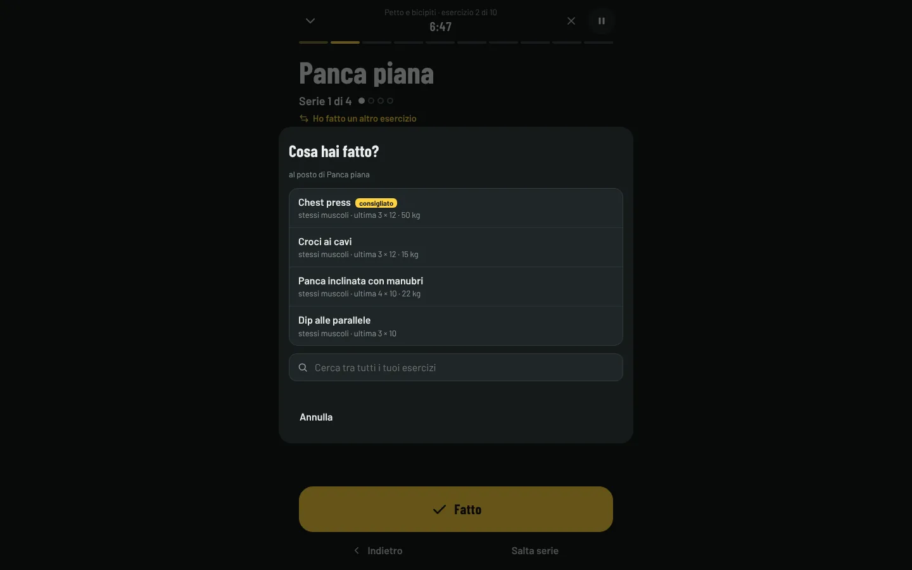
Il cardio
Per il cardio vedi il tempo che manca e gli obiettivi, da cambiare con − e +. Se vuoi, scrivi la distanza che legge il display. Tocca Fine quando hai finito.


Pausa e fine
Pausa, in alto a destra, ferma il tempo: per una telefonata o una fila alla macchina. × chiude prima: le serie fatte si salvano come allenamento parziale. Alla fine vedi il riepilogo: tempo, serie, peso totale, recuperi e i nuovi massimi.


Diverso dalla scheda
Se hai fatto qualcosa di diverso dalla scheda, il riepilogo lo mostra esercizio per esercizio, serie per serie: cosa diceva la scheda, cosa hai fatto, e un'etichetta per ogni differenza (+1 rip., −2,5 kg, in più, saltata, nuova). Per ognuno scegli:
| Scelta | La scheda |
|---|---|
| Solo oggi | Non cambia |
| Come l'ho fatto | Prende i numeri di oggi, serie per serie |
| Tutte … | Tutte le serie come la migliore (se una è andata meglio) o come l'ultima (se sei sceso) |
| Aggiungi alla scheda | Un esercizio aggiunto entra dove l'hai fatto |
All'apertura è già scelto Come l'ho fatto quando hai fatto di più, Solo oggi quando hai fatto di meno o saltato: un giorno storto non abbassa la scheda per sbaglio. Tutto come l'ho fatto e Niente, solo oggi valgono per tutti. Sotto ogni scelta una riga dice esattamente cosa diventa la scheda; poi Aggiorna la scheda.


L'aumento automatico, nelle impostazioni
In Impostazioni → Aumento automatico scegli quando (Se completo: solo se l'ultima volta hai fatto tutte le serie; Sempre) e di quanto per tipo: macchine +2,5 kg, manubri +1, corpo libero +1 ripetizione, cardio +1 minuto. Nella pagina di un esercizio puoi dargli un passo suo o escluderlo.


Il tuo corpo, per i pesi suggeriti
In Impostazioni → Il tuo corpo metti peso, altezza, sesso ed esperienza (tutto facoltativo). Servono solo a proporre un peso di partenza quando un esercizio non ce l'ha ancora: il tuo peso per un rapporto per esercizio, prudente, corretto per esperienza e sesso; l'altezza sposta di poco. Sotto vedi i pesi di partenza dei tuoi esercizi. Sulle macchine è davvero solo un'indicazione: cambiano da palestra a palestra.
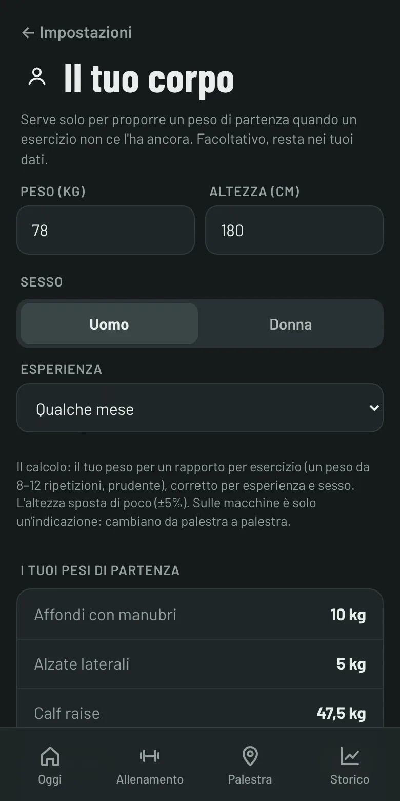
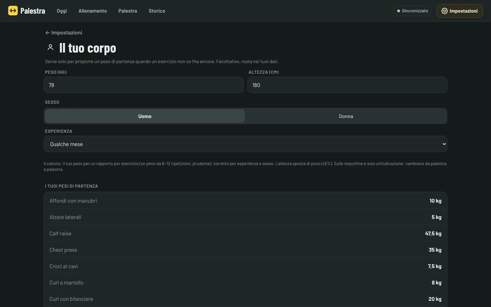
Storico
In alto scegli cosa guardare: Tutto (ogni allenamento insieme), Parti del corpo (una linea per parte, tocca la legenda per nasconderne una), Workout (ogni workout nel suo colore), una Scheda o un Esercizio (il carico, di quanto è cresciuto e l'ultima volta). Sotto, la misura: kg sollevati, serie, o peso massimo (per più esercizi è un indice: 100 è da dove sei partito). Poi il periodo: 2, 3, 6 mesi o tutto.
Sopra il grafico: gli allenamenti, le pause e com'è cambiato nelle ultime 4 settimane.


Le pause
Dieci giorni o più senza allenamenti sono una pausa (il numero lo cambi in Impostazioni → Recupero e allenamento). Nel grafico è una fascia grigia con quanti giorni, e una linea tratteggiata la attraversa: il calo dopo si spiega da solo. Sotto, in Pause, scegli il motivo (vacanza, malattia, infortunio, lavoro…): compare sulla fascia.
Dove sei migliorato
Per ogni parte del corpo, i kg sollevati nelle ultime 4 settimane in cui ti sei allenato contro le 4 prima, con una parola sul perché (più serie, più peso, stabile). Le pause non contano. Sotto ci sono tutti gli allenamenti, completi o parziali.
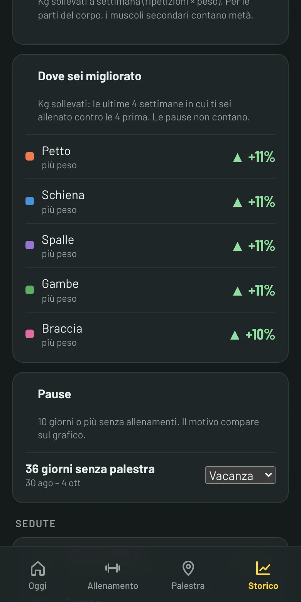
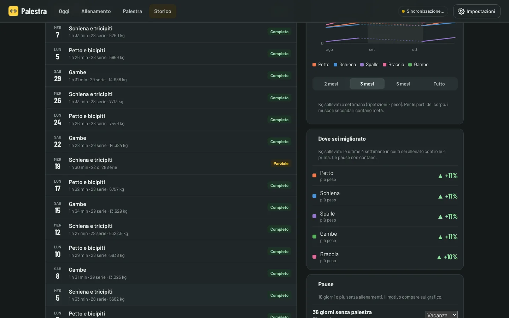
Un allenamento
Toccane uno per vedere dove sono andati i minuti (lavoro, recuperi, spostamenti, pause) e ogni serie che hai fatto.


Importare da testo
Accanto a Nuovo workout, Nuova scheda e Aggiungi esercizio c'è Importa. Incolla il testo o scegli un file .txt. Scrivi come scriveresti a mano, una cosa per riga:
| Riga | Cosa vuol dire |
|---|---|
WORKOUT: Upper Lower di Marco |
Il nome della settimana (facoltativo) |
SCHEDA: Upper @ lun 18:00 |
Inizia una scheda; dopo @ giorno e ora, facoltativi |
Panca piana 4x8 60 kg rec 2:30 |
Un esercizio: serie x ripetizioni, peso e recupero facoltativi |
Curl con bilanciere 8/6/4 x 10/12/14 |
Serie diverse: 8 × 10, 6 × 12, 4 × 14 kg |
Curl con bilanciere 3x8 10/12/14 kg |
Stesse ripetizioni, peso che sale |
Leg press 12/10/8 x 100 |
Stesso peso, ripetizioni che scendono |
Chest press 3x8-12 rec 2:00 |
Una fascia di ripetizioni: il peso sale quando arrivi a 12 in tutte |
Chest press 3x8-12 cedimento |
Ogni serie fino a cedimento |
Rematore 3x8-12 ultima a cedimento |
Solo l'ultima serie fino a cedimento |
Plank 3x45s |
Un esercizio a tempo |
Ellittica 10 min livello 6 |
Cardio, con i suoi obiettivi |
(manubri) |
L'attrezzo, se vuoi: (bilanciere), (manubri), (cavi), (macchina) |
- Gomiti appena piegati. |
Una nota per l'esercizio sopra |
Con le barre, il numero di serie è quante voci ci sono tra le barre. Se ripetizioni e pesi sono entrambi a barre devono essere tanti quanti: se no l'anteprima segna la riga e usa il primo peso per tutte. Esporta scrive le schede nello stesso formato.
I file scritti prima, con SCHEDA: per la settimana e GIORNO: per le schede, si leggono ancora.
Con Everyday
Palestra decide nome, durata ed esercizi; Everyday decide quando. Per collegarle, in Everyday apri Impostazioni → Avanzate → Collegamenti → Palestra e incolla un token per palestra-data con Contents: Read and write.


- Ogni scheda appare in Everyday come routine, con la sua durata stimata.
- Le schede del workout attivo si ripetono da sole nei loro giorni, all'ora che hai scelto. Le altre le pianifichi a mano.
- Un blocco di allenamento in Everyday ha Apri in Palestra: apre quella scheda pronta a partire.
- Alla fine Everyday segna fatto il blocco con l'ora vera di inizio e fine, e la durata stimata si avvicina a quella reale.
- Sposta a domani in Palestra sposta anche il blocco in Everyday, alla prossima sincronizzazione. Rimetti oggi lo riporta dov'era. Un blocco spostato in Everyday si vede nel suo nuovo giorno anche in Palestra.
Una settimana tipo
Domenica sera. Apri Oggi: il workout attivo è Petto e bicipiti · Schiena e tricipiti · Gambe, lunedì, mercoledì e sabato. Everyday ha già messo i tre blocchi in agenda.
Lunedì, 18:00. In palestra tocchi Inizia. È la prima volta della settimana: Palestra ti propone la panca piana a 62,5 kg invece di 60. Confermi. Segui lo schermo serie per serie; dopo l'ellittica ti dice di andare ai pesi liberi, rack R1–2.
Mercoledì. Hai una cena di lavoro. A pranzo apri Oggi e tocchi Sposta a domani: Schiena e tricipiti passa a giovedì, e dopo la sincronizzazione anche il blocco in Everyday è giovedì alle 18:00.
Sabato mattina. Gambe alle 10:30. Leg press occupata: tocchi Pausa, aspetti, riprendi. Il tempo di attesa non allunga la stima della scheda.
Domenica. Nello Storico guardi la panca piana: +7,5 kg in quattro settimane.
Su un computer
Su uno schermo largo le sezioni sono nella barra in alto, accanto al nome dell'app, come in Ricette ed Everyday, con lo stato della sincronizzazione e l'ingranaggio. In Allenamento sotto c'è una seconda barra con Workout · Schede · Esercizi e, a destra, le azioni di quella linguetta (Nuova scheda · Importa).
Le pagine usano la larghezza. In Workout accanto all'elenco c'è la settimana del workout scelto, giorno per giorno, con cosa manca. In Schede l'elenco e la scheda scelta stanno affiancati. Esercizi è in tre colonne. Palestra mette l'attrezzatura a destra delle zone; Oggi e Storico hanno due colonne. Quando modifichi una scheda, a destra c'è la libreria degli esercizi: cerca e clicca + per aggiungere.
Usa un token diverso per ogni dispositivo: telefono e computer restano allineati a ogni sincronizzazione.
Consigli e problemi comuni
La sincronizzazione non parte. Tocca l'ingranaggio e guarda la riga in alto. Se dice errore 401 o 403, il token è scaduto o non vede palestra-data: creane uno nuovo e incollalo in Collegamento GitHub. Con 404, l'utente o il nome del repository sono sbagliati.
Lo schermo si spegne durante l'allenamento. Escludi Palestra dal risparmio batteria del telefono, e controlla che in Recupero e allenamento sia acceso lo schermo.
Il blocco non risulta fatto in Everyday. Sincronizza Palestra (ingranaggio → Sync), poi Everyday.
Compare la barra Aggiorna. È uscita una versione nuova: toccala quando non ti stai allenando.
Vuoi una copia di tutto. Impostazioni → I tuoi dati → Backup scarica tutti i tuoi dati in un file. Il repository su GitHub tiene comunque ogni versione passata.